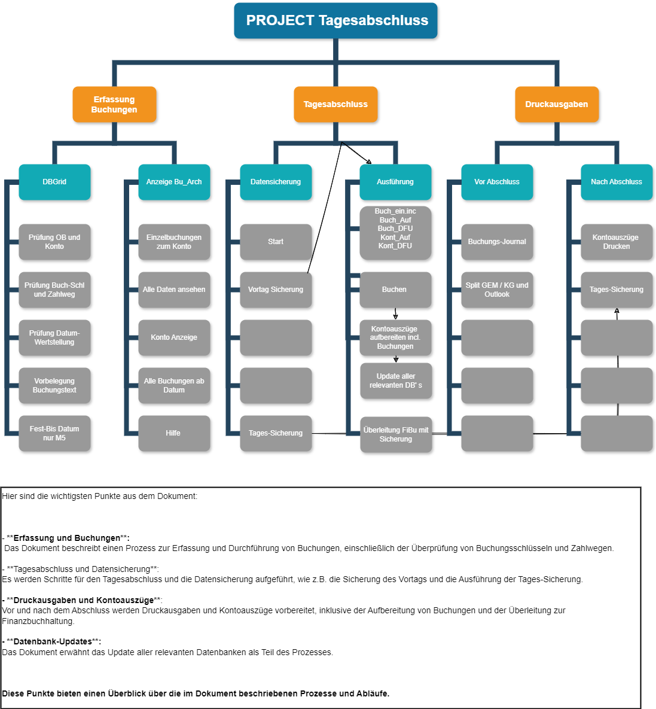

Projekt SPK 64bit
Kurzbeschreibung des Projektes
Kurzbeschreibung des Projektes
Projekt SPK64
Das Programm wurde mit DataFlex realisiert.
DataFlex ist eine objektorientierte Programmiersprache und eine visuelle Entwicklungsumgebung für Windows-, Web- und Mobile-Anwendungen. DataFlex wurde von Data Access Corporation im Jahr 1982 eingeführt und entwickelt.
DataFlex kann mit allen populären Datenbankmanagementsystemen (DBMS) arbeiten, wie Oracle, Microsoft SQL Server, IBM Db2, MySQL, PostgreSQL und anderen ODBC-Datenbanken. DataFlex verfügt über eine integrierte DataFlex-Datenbank, die ohne zusätzliche Treiber verwendet werden kann. DataFlex ermöglicht auch den Zugriff auf andere Datenbanken ohne eine Änderung des Quellcodes.
DataFlex ist eine flexible und portable Sprache, die Variablen mit lockerer Typisierung, automatische Konvertierungen, Vererbung, Methoden und Eigenschaften unterstützt. DataFlex kompiliert den Code zu einem Zwischencode, der auf verschiedenen Betriebssystemen lauffähig ist. DataFlex bietet auch die Möglichkeit, Funktionen aus dynamischen Bibliotheken oder COM-Modulen zu nutzen.
Das Programm wurde mit DataFlex realisiert.
DataFlex ist eine objektorientierte Programmiersprache und eine visuelle Entwicklungsumgebung für Windows-, Web- und Mobile-Anwendungen. DataFlex wurde von Data Access Corporation im Jahr 1982 eingeführt und entwickelt.
DataFlex kann mit allen populären Datenbankmanagementsystemen (DBMS) arbeiten, wie Oracle, Microsoft SQL Server, IBM Db2, MySQL, PostgreSQL und anderen ODBC-Datenbanken. DataFlex verfügt über eine integrierte DataFlex-Datenbank, die ohne zusätzliche Treiber verwendet werden kann. DataFlex ermöglicht auch den Zugriff auf andere Datenbanken ohne eine Änderung des Quellcodes.
DataFlex ist eine flexible und portable Sprache, die Variablen mit lockerer Typisierung, automatische Konvertierungen, Vererbung, Methoden und Eigenschaften unterstützt. DataFlex kompiliert den Code zu einem Zwischencode, der auf verschiedenen Betriebssystemen lauffähig ist. DataFlex bietet auch die Möglichkeit, Funktionen aus dynamischen Bibliotheken oder COM-Modulen zu nutzen.

Das Programm Sparkontenverwaltung ist für Windows-Betriebssysteme konzipiert und ermöglicht die Verwaltung von Sparkonten für mehrere Mandanten. Sie können mit dem Programm Buchungen erfassen, die den jeweiligen Konten zugeordnet werden. Nach der Erfassung führt das Programm einen Tagesabschluss durch, in dem die Voraus-Zinsen für die Konten berechnet werden. Das Programm bietet Ihnen eine übersichtliche und benutzerfreundliche Oberfläche, mit der Sie alle Funktionen einfach und schnell ausführen können. Mit dem Programm Sparkontenverwaltung haben Sie Ihre Sparkonten immer im Blick und können sie optimal verwalten.
Tagesabschluss
Hier sind die wichtigsten Punkte aus dem Dokument.
Diese Punkte bieten einen Überblick über die im Bild rechts beschriebenen Prozesse und Abläufe.
More information >
Hier sind die wichtigsten Punkte aus dem Dokument.
- Erfassung und Buchungen
Das Dokument beschreibt einen Prozess zur Erfassung und Durchführung von Buchungen, einschließlich der Überprüfung von Buchungsschlüsseln und Zahlwegen. - Tagesabschluss und Datensicherung
Es werden Schritte für den Tagesabschluss und die Datensicherung aufgeführt, wie z.B. die Sicherung des Vortags und die Ausführung der Tages-Sicherung. - Druckausgaben und Kontoauszüge
- Vor und nach dem Abschluss werden Druckausgaben und Kontoauszüge vorbereitet, inklusive der Aufbereitung von Buchungen und der Überleitung zur Finanzbuchhaltung. Vor und nach Druckausgaben und Kontoauszüge
- Datenbank-Updates
- Das Dokument erwähnt das Update aller relevanten Datenbanken als Teil des Prozesses. - **Datenbank-Updates**:
Diese Punkte bieten einen Überblick über die im Bild rechts beschriebenen Prozesse und Abläufe.
More information >

Gesamtübersicht

Zeigt das Hauptprogramm
Inclusive der einzelnen Module
Ansichten / Proceduren / Funktionen / Druckausgaben und mehr
Inclusive der einzelnen Module
Ansichten / Proceduren / Funktionen / Druckausgaben und mehr
Gesamtübersicht

Zeigt das Modul Buchung
Inclusive der einzelnen Functions und Procedures
Ansichten / Proceduren / Funktionen / Druckausgaben und mehr

Inclusive der einzelnen Functions und Procedures
Ansichten / Proceduren / Funktionen / Druckausgaben und mehr
Gesamtübersicht


Hier sind die wichtigsten Punkte
Ausgabe Dateien Überleitung FiBu
Jahresende Infos
Angaben zum Code
Dies ist nur ein kleiner Auszug aus dem Projekt. Weitere Beschreibungen sind im Wiki und auf der T-Online Seite vorhanden. Das Programm selbst besitzt eine Hilfe Datei (*.chm) die die meisten Fragen beantwortet. Es gibt auch umfangreiche Hilfs-Formulare auf Html Basis.
More information
edgar.wassmuth@gmx.de
edgar.wassmuth@gmx.de
How to Find us
wer suchet der findet
wer suchet der findet
Social Media
keine Accounts
keine Accounts